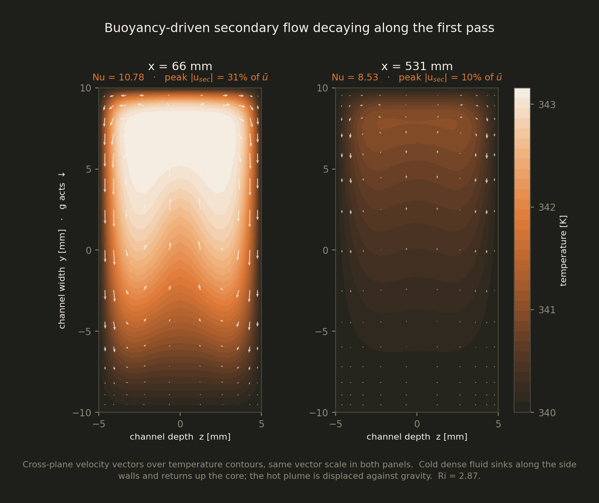
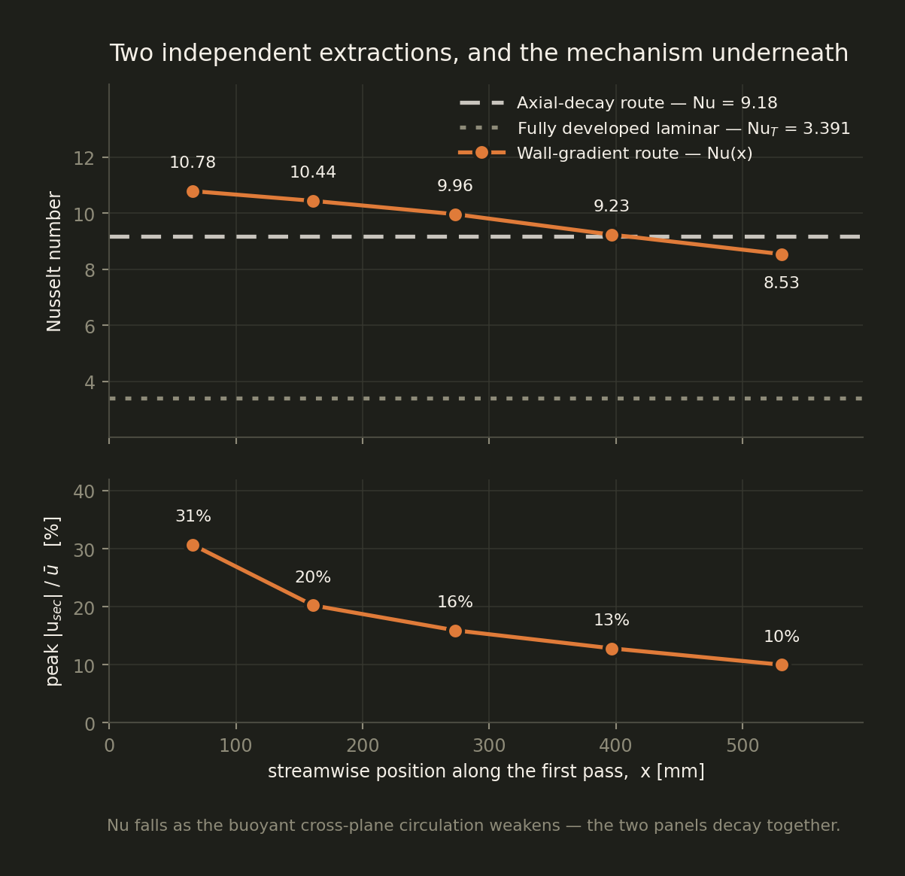

What I'm working on right now
A living record of the tools, methods, and domains I'm actively exploring — not a finished skills list, but an honest snapshot of where my head is right now.
Active Tracks
Three threads running in parallel — all connecting back to energy systems and industrial engineering.
Industrial Automation
Exploring Beckhoff TwinCAT 3 for real-time PLC programming using IEC 61131-3 structured text. The goal is to bridge the gap between simulation-level control logic (as designed in Modelica/MATLAB) and actual deployment on industrial hardware — understanding how PID strategies translate to real automation systems in electrolysis and energy plant contexts.
Why this
My thesis work focused on modelling and control at the simulation level. TwinCAT lets me understand how those control strategies actually get implemented and deployed on real plant hardware — a crucial step for roles in industrial energy systems.
Sustainability Analysis
Learning LCA methodology to evaluate the cradle-to-grave environmental footprint of hydrogen production pathways — from electrolysis to storage and distribution. Covering functional units, system boundaries, and impact categories.
Why this
Green hydrogen is only as "green" as its full production chain. LCA adds a sustainability lens to the technical modelling work — increasingly required in both research and industry roles.
Applied Machine Learning
Exploring how machine learning — and more recently large language models — are being applied in the battery and electrochemical space: state-of-health estimation, degradation prediction, data-driven parameter identification, and using LLMs to mine insights from scientific literature and experimental datasets.
Why this
Data-driven methods are increasingly complementing physics-based models in electrochemical systems. Understanding how ML fits into this space broadens my toolkit well beyond pure simulation.
Deep dive · Computational Fluid Dynamics
An alkaline electrolyser end plate is cooled by a serpentine channel milled into its face. Sizing that circuit needs one number — the convective heat transfer coefficient between the wall and a 30 wt% KOH stream. There is no textbook correlation for it, because the flow sits in a regime where forced convection alone does not set the answer.
Re
136
Deeply laminar. No transition, no turbulence model.
Pr
5.83
Thermal layer sits well inside the hydrodynamic one.
Ri = Gr/Re²
2.87
Buoyancy is not a correction here — it leads.
De
56
At the 180° bends. Above the Dean-vortex threshold.
L/Dh
317
4.23 m of channel at Dh = 13.3 mm.
NTU
15
Why the outlet carries no usable signal at all.
A rectangular channel, 20 × 10 mm (Dh = 13.33 mm), swept along a serpentine centreline of 4.23 m — six straight passes joined by five 180° bends. Working fluid is 30 wt% KOH at 343 K flowing at 110 ml/min, giving a mean axial velocity of just 9.2 mm/s. The walls are held isothermal, 3.15 K below the inlet.
That last choice is deliberate. Stripping out the conjugate solid, the electrochemical source term and any two-phase behaviour leaves a clean constant-wall-temperature problem, so whatever shows up in the Nusselt number is convection and nothing else. Fluid properties come from the literature rather than defaults: density and thermal expansion from Gilliam et al., heat capacity from Roux et al., viscosity benchmarked against Habibi and Li.
At Re = 136 the flow is laminar by a wide margin, and at Pr = 5.83 momentum diffuses roughly six times faster than heat. Read those two alone and this looks like a Graetz problem with a known answer.
The number that changes the picture is the Richardson number, Gr/Re² = 2.87. With a cold wall, a slow viscous stream and a 13 mm length scale, the density-driven cross-plane circulation has a velocity scale comparable to the axial one. Buoyancy is not a correction to this flow; it is the leading transport mechanism. The dimensionless analysis predicts that before a solver is ever launched — and the solution confirms it quantitatively.
Steady incompressible Navier–Stokes under the Boussinesq approximation (buoyantBoussinesqSimpleFoam, OpenFOAM v2606): constant density except in the body-force term, β = 5.84×10−4 K−1, valid at ΔT = 3 K. The fully compressible buoyant solver was tried first and is ill-conditioned here, because the hydrostatic pressure scale swamps the dynamic one.
The mesh is fully structured hexahedral, generated by a parametric script that sweeps the constant cross-section along the centreline: 48 × 32 cells per cross-section, graded to all four walls with a 216 µm first cell, 395,520 cells total. Maximum non-orthogonality 3.9°, maximum skewness 0.31 — near-orthogonal everywhere, which matters when the quantity of interest is a wall temperature gradient. Convection is second-order (linearUpwind), Laplacians corrected, and the run converged to a temperature residual of 2.5×10−7.
The textbook route to h is a global energy balance: take ṁcp(Tout − Tin) over the wetted area with an LMTD driving difference. It collapses here, and the collapse is physical rather than numerical.
With NTU = hPL/ṁcp ≈ 15, the fluid equilibrates with the wall long before it reaches the outlet: the converged outlet bulk temperature is 340.000 K, equal to the wall temperature to written precision. Numerator and denominator both go to zero and the ratio is noise over noise.
The usable signal therefore lives only in the thermal entrance region. Its length is 0.05 Re Pr Dh ≈ 0.53 m — almost exactly one straight pass. That is the entire measurable window inside a 4.23 m channel, and recognising it was the turning point of the project.
(a) Local wall gradient. At five stations through the first pass, Tb is the streamwise-velocity-weighted cross-sectional mean and q″ is k|∂T/∂n| integrated along the wetted perimeter — trapezoidal, perimeter-weighted, and using only points lying exactly on the wall. A fixed distance tolerance instead of an exact wall test is mesh-dependent under grading and manufactures a convincing but entirely artificial grid convergence; that bug cost a full study before it was found.
(b) Axial decay. For constant h, θ = (Tb − Tw)/(Tin − Tw) must decay exponentially in x. Fitting ln θ against x gives a slope of −3.512 m−1 at R² = 0.9995, so h = ṁcp(−d ln θ/dx)/P = 433 W/m²K, i.e. Nu = 9.18.
The two routes share no post-processing path — one is a local differential quantity, the other an integral one — and they agree to 6%. They are also sensitive to different inputs, which makes the agreement worth more than it first looks: see the closure check opposite.
Fully developed laminar flow in a 2:1 rectangular duct with isothermal walls gives NuT = 3.391. The simulation returns 2.7–3.2 times that value, and the cross-plane velocity field says exactly why.
At x = 66 mm the peak secondary velocity — the component normal to the channel axis — reaches 31% of the bulk axial velocity. By x = 531 mm it has decayed to 10%, and the local Nusselt number decays in lockstep with it, 10.78 → 8.53. The enhancement is transverse advection sweeping near-wall fluid into the core, not a conduction effect and not a numerical one. The buoyancy scaling anticipated it; the velocity field proves it.

Fig. 1 — the mechanism
Cross-plane velocity over the temperature field at two stations in the first pass, on a common vector scale. Cold dense fluid sinks along both side walls and returns up the core, displacing the hot plume against gravity. By x = 531 mm the circulation has lost two thirds of its strength — and the Nusselt number falls with it.

Fig. 2 — the result
Local Nu(x) from the wall-gradient route against the single Nu = 9.18 from the axial-decay fit, both far above the fully developed laminar value. The lower panel is the same curve in a different variable: the enhancement is the secondary flow, so the two decay together.
Open questions — what I would ask myself next
Grid convergence
One mesh so far. The quality metrics are good, but they are not a refinement study — a three-level GCI with a computed observed order is the next piece of work, and until it exists the Nusselt number has no error bar.
Bend physics
De = Re√(Dh/2R) ≈ 56 at the 180° turns, above the threshold for Dean vortices. Every station reported here sits in the straight pass, so bend-enhanced mixing is deliberately excluded rather than accounted for.
Gravity orientation
g is imposed in-plane, across the 20 mm channel width, which assumes the plate hangs vertically. A horizontal installation turns a side-heated problem into a stably or unstably stratified one and changes the buoyant contribution qualitatively.
The reference value
An external Nu ≈ 6 exists for this duty and is not yet reconciled. The leading hypothesis is an averaging definition that includes the thermally saturated downstream region, rather than a difference in physics — but that remains a hypothesis.
Representative vs. measured geometry
The current layout is a representative serpentine (6 × 600 mm passes, 80 mm pitch). Substituting the measured plate circuit shortens the passes without moving the regime — but the entrance-region window scales with it, so the sampling stations move too.
Modelling scope
Constant properties, Boussinesq, single phase, no conjugate conduction in the nickel plate. Each is defensible at ΔT = 3 K. None is free, and the conjugate coupling is the first one I would relax.
“The hard part was never running the solver. It was realising that the quantity I wanted had already been destroyed by the time the flow reached the outlet — and then finding two ways to measure it that were free to disagree with each other.”
On the Radar
Topics I plan to pick up next — no timeline, just a queue.
Digital Twin Frameworks
Connecting real-time plant data with physics-based simulation models
Hydrogen Safety & Regulations
EU RED II, ATEX directives, and safety standards for electrolyzer installations
German (B1 → B2)
Continuing language learning — critical for working in German industry